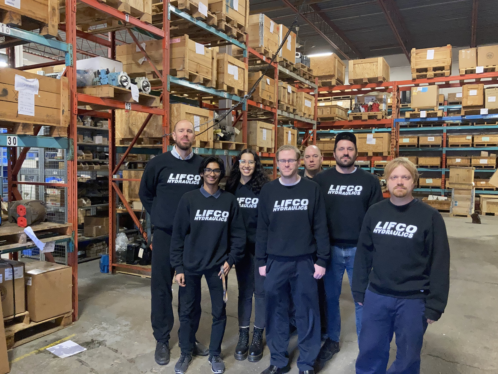
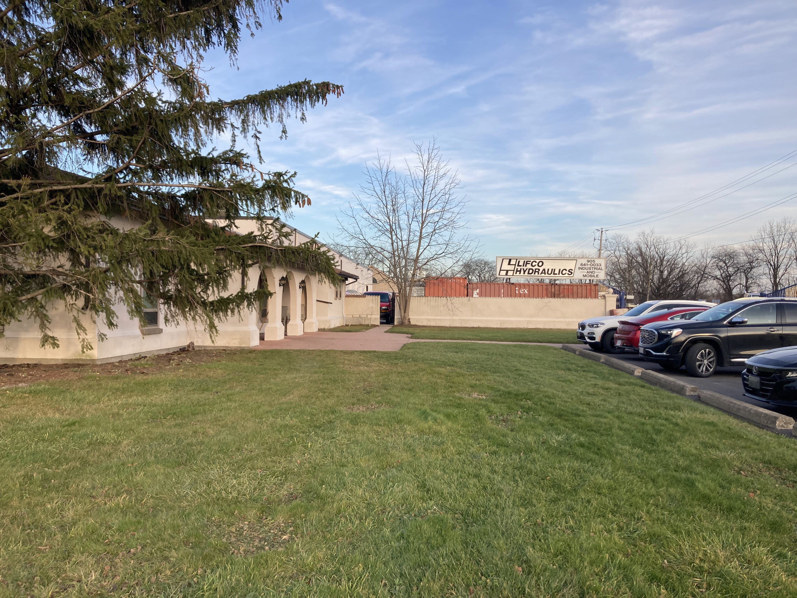

Abstract
When approaching a business from a customer standpoint, interactions may seem tedious and like a chore. Ordering your morning coffee on the way to work is an example of this. Positive interactions have a magical way of spinning this notion on its head, like the little spark you feel when the barista remembers your name.
Through my Summer 2022 4-month co-op at Lifco Hydraulics as a Marketing Developer, I got to ensure as many Lifco customers as possible experienced that spark. I'd like to demonstrate my process at Lifco, including the trials and successes which made every workday interesting, and the new perspective I've found through a new role at the same company.
About The Employer
Lifco Hydraulics is an expanding company that has been around since 1978! They stock, distribute and service hydraulics across North America with inventory in the US (Buffalo, NY.) and Canada (St. Catharines, ON., Toronto, ON., & Markham ON.). Additionally, sales offices are located in Canada, Mexico, and the US. In just one year, Lifco can expect to sell to 83 different countries.
Denison, Parker & Linde are just a few names on their product line of over 250 000 parts. The factory is equipped with a 400-horsepower piston pump test stand, trained technicians, and computerized reporting capabilities.
The company is always evolving, and with it, sister companies and new departments are to be expected. The company strives for exellent sales experiences with professional reps located at each location.
LIFCO
Large-scale North American hydraulics distributer.
TRK
TRK Attachments manufactures heavy equipment attachments.
Job Description
I returned to Lifco with a brand new task, to setup, integrate and improve upon the newly purchased CRM salesforce (Customer Relationship Management System). I didn't realize what a daunting task this would be, but I managed to keep it under my control by lessening the scope of the work to be done. The first couple weeks were just exploring every tab and page the system had to offer. I didn't want to risk the integrity of any existing customer data, so I worked with fake information until I was comfortable to make the CRM transition.
Our existing CRM was made by the company years ago and was primitive compared to the seemingly limitless salesforce capabilities. I started to do mass uploads of our customer, business, and quote records, but immediately ran into an issue. Since many people had been inputting data with no standardization, the formats were always different, chunks of information would be missing or incorrectly placed. This is what made me decide to start documenting the salesforce setup and process so that anyone new coming in, could use the system the same way I had. I began collecting new batches of data from our sales team as they were working and developing new client relations. The methods to input this data were systematic and easy to replicate. Some of the work was automated as I was able to develop within salesforce and the company website, tools like form handlers made it so that customers requesting quotes were automatically setup in the CRM with their info fully filled out.
Now that there was a steady flow of data to work with, it was time for the system to become useful. I trained a few members of the sales team on salesforce and made their lives easier. What they'd previously have to scour the system for, in the middle of a phone call with a customer, could now be brought up within a couple clicks. Searching a customer by name brought up their last quote and what kind of machines they own.
I would generate weekly reports of the sales team's performance and the speed of data generation to present to my boss at the beginning of each week. Lifco even gave me the opportunity to experiment with my own campaigns using the salesforce marketing cloud. I experimented with email campaigns, calling campaigns and postcards/physical mail integrations using postgrid and zapier. In the end, only a couple campaigns were actually run, but it was a fun and new experience none the less!
Learning Goals
1. Learn how to take an external software like salesforce and connect it to live data from our website.
I noticed that some customer data on our website was being recorded for sales and quoting purposes, but that same data was being manually entered into the old CRM by the sales team. I used form handlers created on salesforce and put them on the site so that all the necessary values were funneled into salesforce and placed under the correct leads. This cut out a monotonous kind of work the sales team has been doing for years, and saved time in the future with salesforce taking even more information in than the last CRM. The experience of getting two kinds of softwares to interact will come in handy for future data manipulation.
2. Demonstrate the effectiveness of the salesforce system and improve our use of it.
My boss would have weekly meetings every Monday to review the previous week's progress and plan ahead. I brought reports that were easy to generate through salesforce and presented the most valuable information in a consice manner. This way we could tell if more phone calls needed to be made, if the current calling strategy was ineffective or if certain reps weren't able to keep up with the teams demand. This meant that week by week we could seek constant improvement and expect significantly better results by the end of the month. I visually layed out data using charts to compare opportunities won to lost, weigh loss reasons, and leads converted vs lost.
3. Create new functionality within salesforce for specific needs of the sales team.
Sometimes, the sales team would notice functionality that they were missing, which would make their day to day even easier, so they would setup a meeting with me and it was my job to implement the new feature. This ranged from adding new reasons as to why an opportunity was lost, to creating filters to determine which of the sister companies a customer had interacted with, all the way to auto-sending reminder emails when a task is nearly due. Salesforce made these additions seemless with their own developing language and workflow tool.
Skills
C#
TEAMWORK
SALESFORCE
MARKETING
SALES
Acknowledgements
I’d like to first thank my boss Fraser Berkhout, for giving me this amazing experience and guiding me along the way. My supervisor Chris Bain taught me a lot about leadership and was always there to help me and clarify for me, even with everything else on his plate. Kyle Weymark has showed me as much about coding as several courses could. Wayne Burgess shared his design expertise and Shawn Dalrymple would help me with even trivial things that I didn’t understand. Layla Mansour was the other co-op student with me and it was fun learning together. I'd also like to thank Lou, Lise & Linda for their incredible sales expertise and patience while I found my footing. Thank you all for your patience and for helping me grow as a student of Computer Science.
Conclusion
Returning to familiar faces who warmly welcomed me back was a refreshing experience, but I was worried I wouldn't be able to grasp anything in such a complex software. With help from sales experts, knowledgable programmers and a supportive boss, I was able to slowly but surely make another impactful 4 months at Lifco Hydraulics.
